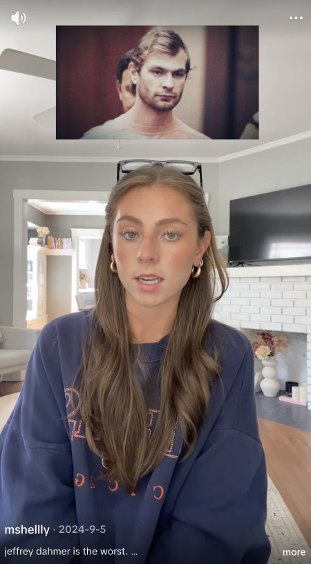
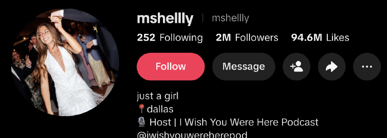
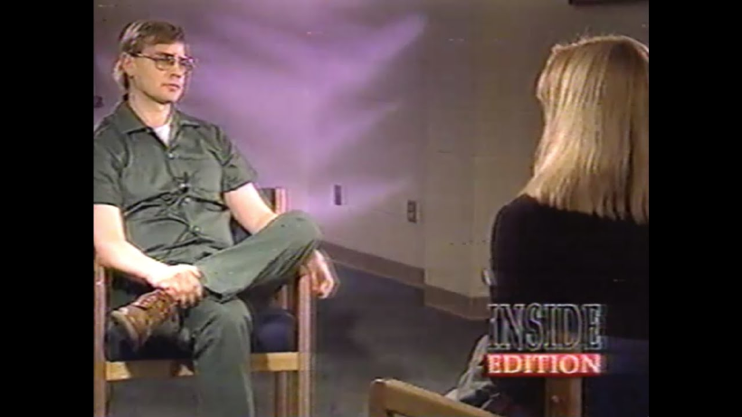
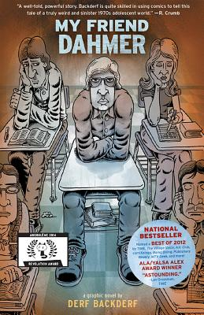
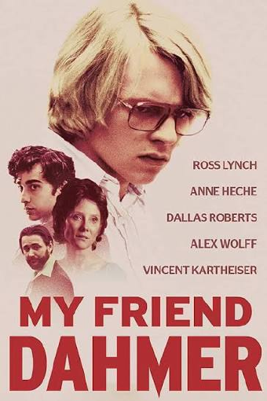
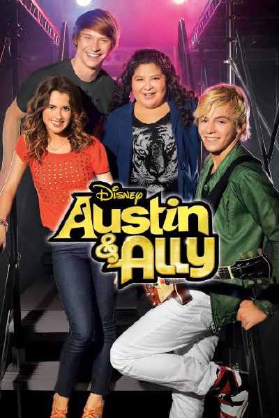

Our claim
One story,
three languages.
Comparing a TikTok video, a 1993 tabloid interview, and a 2017 feature film reveals that true crime is not one story but a book repeated in different languages. Each form converts the Dahmer case into what it rewards: TikTok into engagement, Inside Edition into access, My Friend Dahmer into sympathy. The conventions are different but the product is the same. In every version, the seventeen victims, most of them Black men and boys failed by the local police, recede as the killer grows. The story becomes content to be reacted to, discussed, and forgotten a few scrolls later. Killer centered media is now a flaw, rather the genre’s defining convention, and each new form finds a new way to enact it.
The corpus
Three forms, ranked by
how close they let you get.
@mshellly, TikTok
A thirteen-minute video by creator @mshellly, posted September 2024.
Read the analysis → Broadcast news interviewNancy Glass interviews Jeffrey Dahmer
Inside Edition, February 1993. Filmed in prison.
Read the analysis → Narrative feature filmMy Friend Dahmer
Dir. Marc Meyers, 2017. Adapted from Derf Backderf’s graphic memoir.
Read the analysis →TikTok
Creator @mshellly.
- Platform: TikTok
- Creator: @mshellly
- Form: vertical short-form
Short-form video by @mshellly. Source: tiktok.com/@mshellly.


Creator @mshellly’s 13-minute-long TikTok video opens with a brief introduction to potential influences from Jeffrey Dahmer’s childhood, mentioning conflict within his family, his mother’s mental health struggles, his father’s absence, and a behavioral change after childhood surgery at age four. Yet these details never develop into a sustained attempt to explain his actions. Rather, the creator ultimately frames him as almost incomprehensibly evil, repeatedly emphasizing her own inability to understand his actions. Her explicit argument is that Dahmer deserves unequivocal moral condemnation, a verdict she delivers directly in lines like “this man is straight evil.” More implicitly, the creator prioritizes establishing distance between Dahmer and the “normal people” watching his story, dumbfounded by how someone with “a brain and heart” could do these things. Even further, that distancing comes at the cost of the video not naming victims—a choice that the creator claims she made out of respect for the families. However, her unsettlingly vague coverage of events is just as disrespectful. For example, the creator compresses the police returning 14-year-old escaped victim Konerak Sinthasomphone back to Dahmer to a simple “police believed Jeffrey.” Furthermore, she failed to mention that most of the men Dahmer killed were black.
The creator’s personality plays an unusually large role in establishing her perspective. Rather than adopting a detached tone associated with traditional reporting, she constantly reminds viewers of her presence as the narrator. She begins by admitting, “I thought I knew the story, but I did not,” and claims that she “never want[s] to hear his name again.” At one point, text appears on the screen saying that she is “second guessing” her decision to cover Dahmer at all. These reactions contribute little factual information but serve an important rhetorical purpose: to show viewers how they are supposed to react. Her disgust becomes a model for the audience’s own disgust. Thus, instead of building ethos through expertise, she builds it through relatability, presenting herself as an ordinary person encountering something horrifying alongside her viewers.
The conventions of TikTok further amplify the creator’s relatability. She speaks extremely quickly, compressing years of events into a rapid sequence of increasingly shocking moments. That pacing, likely limited by the platform’s time constraints, leaves little room to linger on context, uncertainty, or the victims. However respectful the creator’s stated reason for withholding their names, the effect remains: the victims exist only as a body count. TikTok’s community guidelines system also visibly affects the language of the story. The creator mutes portions of her narration, abbreviates sexual assault as “SA,” and substitutes euphemisms such as “was no longer alive” for more direct language. This level of censorship creates a strange tension within the medium, where the video depends on the disturbing nature of the case to hold viewers’ attention while simultaneously sanitizing its language enough to remain acceptable on TikTok. Effectively, the story is being told in a completely different way.
The creator also keeps her fanbase in mind, drawing viewers in through her specific way of storytelling. The creator asks viewers to “let me know what you think” before ending with the affectionate influencer-style farewell, “I love you so so much” and “massive kiss on the forehead.” The abrupt shift from retelling horrific events to speaking intimately to her audience illustrates the striking measures taken to gain and maintain a fanbase. The creator reinforces the story of Jeffrey Dahmer as content to be reacted to, discussed in the comments, and most likely forgotten a few scrolls later. She transforms the crime into a participatory experience for her viewers, prioritizing shock, identification with the narrator, and audience engagement over analysis.
The Nancy Glass Interview
Produced by Inside Edition and filmed at the maximum-security prison where Dahmer was incarcerated.
- Outlet: Inside Edition
- Interviewer: Nancy Glass
- Setting: maximum-security prison
- Form: broadcast news
Interview with Jeffrey Dahmer, conducted by Nancy Glass for Inside Edition. Source: youtube.com.
If the TikTok’s authority comes from relatability and My Friend Dahmer’s from sympathy, then the Inside Edition interview’s authority comes from access. In February 1993, the newsmagazine aired Nancy Glass’s exclusive prison interview with Dahmer, conducted a year into his sentencing. The interview’s implicit argument is embedded in how the program frames exclusivity: understanding Dahmer means hearing from the killer himself.

The segment’s whole product relies on Dahmer’s alarmingly off-putting presence and words. He describes, in a flat monotone voice, that he killed not from anger nor hatred but from an “obsessive desire” to control and permanently possess his victims. He felt no repulsion, but rather a “surge of energy” when killing, and explained that when you view a person as just “an object for pleasure … it seems to make it easier to do things you shouldn’t do.” The interview’s conventions do interpretive work for the audience, where the interviewer maintains a position of authority and interprets through a lens of “normalcy.” Glass’s narration warns viewers that Dahmer’s articulateness is a “thin disguise,” convincing the audience not to blindly trust the subject of the program, but to try to look deeper into his mind.
The interview, despite the broadcast’s sensationalism (showing childhood pictures and videos of his apartment), is extremely in depth. Victims are named while photos pan across the screen becoming more real for the audience. Throughout the interview, the broadcast cut from Dahmer allowing for the presentation of primary evidence to provide context to the case. The actual 911 call was playing while showing photographs of evidence and of Dahmer. Yet, the tabloid interview remains fixated on Dahmer. The victims and failed police response give way to a serial killer brought in to explain the psyche of Dahmer, so the final statement went to the puzzle of the man, not the people he killed.
The interview includes more of the case against Dahmer; but the emphasis stays on him as the program’s subject. The survivors speak for seconds but Dahmer speaks for two broadcasts. Still, the tabloid interview carries the accountability and access the TikTok creator lacks and it refuses the sympathy that My Friend Dahmer’s filmmaking manufactures. By putting primary evidence in front of the audience, it makes the case feel more concrete. Viewers see firsthand what exactly was done and confront the realization that a killer like this could live among them as an ordinary person.
My Friend Dahmer
Directed by Marc Meyers, 2017, adapted from Derf Backderf's graphic memoir about knowing Dahmer in high school. Dahmer is played by Ross Lynch — until then best known as a Disney Channel star.
- Dir. Marc Meyers
- 2017
- Adapted from Derf Backderf
- Dahmer: Ross Lynch
Trailer for My Friend Dahmer (dir. Marc Meyers, 2017). Source: youtube.com.

Source text, 2012

Adaptation, 2017
In My Friend Dahmer, the filmmakers use casting, cinematography, sound, and narrative structure to complicate how the audience sees a person they already know will become a murderer. Rather than beginning with Dahmer’s crimes, the film limits itself almost entirely to his senior year of high school, when he is still an awkward classmate rather than an infamous serial killer. That choice creates an uncomfortable tension for the audience: it knows what he will eventually do, but the people around him do not. As a result, the film highlights how storytelling can shape the way audiences interpret a criminal before those crimes even occur.
Casting contributes to this effect, particularly through Ross Lynch as Dahmer. Lynch is recognizable from roles in Disney productions, where he often played charismatic, likable characters. That familiarity shapes how viewers encounter him in the movie. Rather than immediately presenting Dahmer as distant or monstrous, the film gives him the face of an actor audiences may already associate with adolescence and harmlessness. This outcome is reinforced by the movie’s focus on experiences that are recognizable to teenagers: being excluded at lunch, dealing with fighting parents, trying to impress classmates, and wanting to feel included. The film repeatedly pictures Dahmer alone or in the foreground while other students interact behind him, visually establishing him as an outsider even when he says very little.
The record
The film

What he brought with him
The movie’s sound and cinematography make the watch experience especially unsettling because they shift between sympathy and discomfort. Scenes involving Dahmer’s loneliness or humiliation are often highly stylized, using dramatic music, varied speeds, blurring, and lighting effects that make his experiences feel almost tragic. Other moments, like when Dahmer cuts open the fish he has caught and explains that he wanted to see inside it, lack music, leaving the audience in the discomfort of the moment. The movie can therefore reveal things about him through form, even without dialogue.
Most importantly, the movie refuses to depict the actual murder that would normally form the centerpiece of a true-crime story. Near the end, Dahmer picks up a hitchhiker, and the movie makes a conspicuous point of identifying him by his full name: Steven Hicks. Text on the screen after explains that he became Dahmer’s first victim. That ending pretty clearly defines what the story is trying to represent: a descriptive picture of what happened before Dahmer’s murders. For nearly the entire movie, viewers are led to study Jeffrey’s family, isolation, desires, and behavior. The sudden shift to finally naming Steven Hicks, however, shifts the focus away from Jeffrey and abruptly cuts off the formation of sympathy for him. It reminds us that the story does not end with an isolated teenager, but rather real victims.
Works Cited
- Backderf, Derf. My Friend Dahmer: A Graphic Novel. Abrams ComicArts, 2012.
- Dahmer, Jeffrey. Interview by Nancy Glass. Inside Edition, Feb. 1993. YouTube, www.youtube.com/watch?v=J3QNgHY9Bwk.
- @mshellly. “jeffrey dahmer is the worst.” TikTok, 5 Sept. 2024, www.tiktok.com/@mshellly/video/7411327882099772703.
- My Friend Dahmer. Directed by Marc Meyers, FilmRise, 2017.